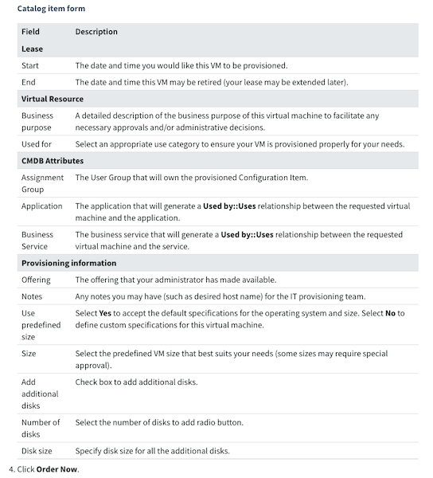

<!DOCTYPE html><html><head><meta content="text/html;charset=utf-8" http-equiv="Content-Type">
         <meta content="utf-8" http-equiv="encoding"><style>
      .markdown-body {
          box-sizing: border-box;
          min-width: 200px;
          max-width: 980px;
          margin: 0 auto;
          padding: 45px;
          border-style: dotted solid;
      }
  
        @media (max-width: 767px) {
          .markdown-body {
              padding: 15px;
          }
          .sidebar {padding-top: 15px;}
      }
  
      .markdown-body .warning {
          border-style: solid;
          background-color: rgba(255,10,0,.05);
      }

      .markdown-body pre
      {
        border-radius: 0.3rem;
        border: solid 1px #dce6f0;
      }

      .main {
        margin-left: 200px; /* Same as the width of the sidenav */
        padding: 0px 10px;
      }

      /* The sidebar menu */
      .sidebar {
        height: 100%; /* Full-height: remove this if you want "auto" height */
        width: 200px; /* Set the width of the sidebar */
        position: fixed; /* Fixed Sidebar (stay in place on scroll) */
        z-index: 1; /* Stay on top */
        top: 0; /* Stay at the top */
        left: 0;
        background-color: #F2E9E4; 
        overflow-x: hidden; /* Disable horizontal scroll */
        padding-top: 20px;
        padding-left: 10px;
        color: #261C16;
        border: 1px solid #D9D0C7;
      }

      /* The navigation menu links */
      .sidebar a {
        color: #261C16;
        display: block;
      }

      /* When you mouse over the navigation links, change their color */
      .sidebar a:hover {
        color: #8C8480;
      }

      .markdown-body .footnote-ref {
          padding-left:1px;
      }

      .markdown-body .footnote-ref a {
        color: #261C16;
        text-decoration: none;
      }

      </style>
    <link rel="stylesheet" href="/Book/github-markdown.css"><link rel="stylesheet" href="/Book/github.css"></head></html><div class="sidebar">
            <h3 id="home"><a href="/Book/">Home</a></h3>
<h3 id="introduction">Introduction</h3>
<ul>
<li><a href="/Book/01-introduction/about.html">About this book</a></li>
<li><a href="/Book/01-introduction/motivation.html">Motivation</a></li>
<li><a href="/Book/01-introduction/bigideas.html">Big Ideas</a></li>
</ul>
<h3 id="engineering-basics">Engineering Basics</h3>
<ul>
<li><a href="/Book/02-basics/basicskills.html">Basic Skills</a></li>
<li><a href="/Book/02-basics/Shells.html">Resources</a></li>
<li><a href="/Book/02-basics/Setup.html">An installation philosophy</a></li>
<li><a href="/Book/02-basics/Environments.html">A philosophy: Be able to throw away your machine and still code</a></li>
<li><a href="/Book/02-basics/profile.html">Checking your local environment</a></li>
</ul>
<h3 id="computing-environments">Computing Environments</h3>
<ul>
<li><a href="/Book/03-environments/virtualization.html">Virtualization</a></li>
<li><a href="/Book/03-environments/VM.html">Preqs</a></li>
<li><a href="/Book/03-environments/provision.html">REST Refresher</a></li>
<li><a href="/Book/03-environments/containers.html">Setup</a></li>
</ul>
<h3 id="configuration-management">Configuration Management</h3>
<ul>
<li><a href="/Book/04-configuration/configure.html">Configure</a></li>
</ul>

            </div><div class="main"><article class="markdown-body"><h2 id="big-ideas">Big Ideas</h2>
<h3 id="before">Before</h3>
<p>It is worthwhile to consider a time before instantly available cloud resources for computing and fast delivery times for software.</p>
<p></p>
<p>When companies first began operating software for customers, the primary interface for requesting a server was through the information technology (IT) department. The process might roughly look something like this.</p>
<ul>
<li><p>Send in a request, like the above form.</p>
</li>
<li><p>Wait 3&#x2013;6 months later.</p>
</li>
<li><p>Finally, receive a response:</p>
<blockquote>
<p>IT: &#x201C;Here is your server with php 5 installed&#x201D;.<br>You: &#x201C;But I requested it with php 6!&#x201D;.<br>IT: &#x2026; &#x201C;Sorry, that&#x2019;s not available&#x201D;. <code>&#xAF;\_(&#x30C4;)_/&#xAF;</code>  </p>
</blockquote>
</li>
</ul>
<p>While this may seem like a slight exaggeration, the realities were as a developer, you were greatly limited in what your computing environment looked like and how you accessed it. But you also had bigger problems, like working on a large software project for 2 years without shipping any code to a customer.</p>
<h3 id="now">Now?</h3>
<blockquote>
<p><strong>Pop quiz:</strong>
How many commits are deployed daily, at Netflix?<br>How often is the software of Disney theme park rides updated?</p>
</blockquote>
<p>At Netflix? Five, Twenty?  See answer below <sup class="footnote-ref" id="marked-fnref:Netflix"><a href="#marked-fn:Netflix">[Netflix]</a></sup>.</p>
<p>Disney, maybe once or twice a year? See answer below <sup class="footnote-ref" id="marked-fnref:Disney"><a href="#marked-fn:Disney">[Disney]</a></sup>.</p>
<h3 id="a-short-history-of-devops">A short history of DevOps</h3>
<p>Demands for more agile development and armed, needed a cultural and paradigm change.</p>
<p>Patrick Debois.
Andrew Shaffer.</p>
<h3 id="devops-and-continuous-deployment">DevOps and Continuous Deployment</h3>

                <pre class="warning"><code>
                    TODO: Summarize Big Ideas and migrate content better throughout book.
                </code></pre>
                <h3 id="the-big-ideas">The Big Ideas</h3>
<p>co-organized five Continuous Deployment Summits, first starting in July 2015, hosted at Facebook, Netflix, Google, Microsoft, and Twitter. The purpose of the Summit is to share best practices and challenges in transitioning to the use of continuous deployment.   </p>
<p>The Summit is attended by one representative from each invited company and facilitated by researchers.  Companies that have joined the Summit include: Cisco, Disney, Ericsson, Facebook, Google, IBM, LexisNexis, Mozilla, Netflix, Nortel, Red Hat, SAS, Slack, Twitter, VMWare, and 18F.  We will continue to invite a variety of companies that reflect different industries, products, and infrastructure needs. Indeed, the companies have ranged from having products that deploy changes to production infrastructure 4000 times per day to those who deploy once or twice per year. The companies represent a spectrum from continuous deployment pioneers with mature continuous deployment implementations to those with architectural baggage necessitating a multi-year transition to the use of continuous deployment practices. The factor that unites these companies is that all strive to leverage faster deployment to deliver higher quality products to their customers ever faster, using advanced analytics to translate a deluge of available telemetry data into an improved product. </p>
<h4 id="features-are-experiments">Features are Experiments</h4>
<p>Jez Humble argues that a key to running a lean enterprise is to ``take an experimental approach to product development&#x2019;&#x2019;~\cite{Humble:2015}. In this view and that of Lean StartUp \cite{Ries:2011}, no feature is likely to persist for very long without data justifying its existence with data.  With continuous deployment, a planned feature can be treated as an experiment, of which some deployed features are allowed to die. For example, on Netflix.com if not enough people hovered over a new element, then a new experiment might move the element to a new location on the screen.  If all experiments showed a lack of interest, the new feature would ultimately be deleted. </p>
<p>Companies at the Summit reported using practices to support feature experimentation. In general, statistics are collected on every aspect of the software. Performance and stability metrics are recorded, such as page render times, database column access, exceptions and error codes, response times, and API method call rates. To collect all this information, the architecture of the software must be designed with a telemetry-first mindset.  Instead of keeping localized copies of performance and error logs on a server, metrics are streamed to a centralized in-memory data store. Finally, to support data analytics, several companies employ a large staff of data scientists, reaching as much as a third of engineering staff. A rich set of data exploration tools, including custom data query languages, are created and used. </p>
<h4 id="fast-to-deliver-slow-to-release">Fast to deliver, slow to release</h4>
<p>Deploying code into production does not necessarily mean user-facing features are available for customer use right away. Sometimes, a new feature may be deployed and evaluated in production for several months before being publicly released. For example, at Instagram an engineer may want to build a new feature for threading messages on picture comments. In this case, by deploying code to production, the engineer can evaluate and test the feature in a live environment by running the code but keeping the results <code>invisible&apos;&apos; by not enabling the new feature in the user interface. This practice, called a dark launch, allows the engineer to slowly deploy and stabilize small chunks directly in production without impacting the user experience.  With a feature flag, a feature is deployed but disabled until it is ready for release.  After stabilization, the engineer can </code>turn on&#x2019;&#x2019; the feature and release it via a configuration server. The benefit of this practice is that it allows a team to avoid integration issues or maintain long-running feature branches. By simply deploying changes early, often, and frequently in production, the overall deployment friction is reduced.   </p>
<h4 id="you-are-the-support-person">You are the Support Person</h4>
<p>The developer has the power and freedom to deploy changes at their own behest.  With great power comes great responsibility. If code breaks in production, whose responsibility is it: the developer&#x2019;s or the operations team&#x2019;s? Traditional software methods encourage siloed responsibility.  Developers ``throw code over the wall&#x2019;&#x2019; to quality assurance (QA) teams who then throw it over another wall to operations teams. 
%Several Summit organizations discussed developers that code and don&#x2019;t stop to understand requirements, user stories or what production environments look like. 
By owning a feature or code change from inception to deployment, the burden is on the developer. This burden means that when things break, the developer is the one getting the support call and responsible for fixing the issue, no matter the time of day.  </p>
<p>Developers owning changes ``from cradle to grave&#x2019;&#x2019; means that traditional team structures need to change. Netflix has no dedicated operations teams. While functional roles still exist, such as QA or operations, these roles are embedded in development teams, creating hundreds of loosely coupled but highly aligned teams. Instead of teams dedicated to a particular functional role (e.g. QA, operations, development), teams have a representative cross section of necessary roles. Instagram has found value in having teams with members that focus on areas but are, as a team, ultimately responsible for the life of a feature. Both Instagram and Red Hat have employed the idea of support rotations where each member of the team spend some amount of time in a customer support role, which results in shared pain. </p>
<h4 id="configuration-is-code">Configuration is code</h4>
<p>Practitioners of continuous deployment are finding that, at scale, not treating configuration like code leads to a significant percentage of production issues. Traditionally configuration has been thought of as a runtime consideration managed by an operations team or system administrators.  </p>
<p>Changes are made to servers live and often in a one-off fashion that can lead to server drift. For example, an engineer is experimenting with optimizing query speeds for the database and changes the configuration on one of the database boxes. Now this change has to be replicated to four database servers. When multiple servers are intended to represent the same application, having even one undergo configuration drift can lead to unknown or difficult-to-debug breakages. Modern configuration management tools, such as Ansible, Puppet, Chef and Salt, allow configuration management to be scripted and orchestrated across all server assets.  </p>
<p>The new normal for organizations is that managing configuration should be treated the same as managing features and code. For example, at Netflix, for every commit, the build process creates a debian package completely specifying the dependencies needed and then installs them within a newly-created Amazon Web Services virtual machine image. Both Facebook and Netflix noted that despite tooling, configuration changes can still cause difficult-to-debug errors. Netflix does 60,000 of these types of changes a day and has no system for tracking or reviewing those changes. This leads to, as Netflix would put it, shooting themselves in the foot often. Teams at Red Hat have found that, just like large code bases, large configuration suites can be become unruly. </p>
<h4 id="persistent-and-incremental-practice-adoption">Persistent and Incremental Practice Adoption</h4>
<p>As Einstein advises, ``Persistence is the most powerful force on earth, it can move mountains.&#x2019;&#x2019;  The uniting factor among all the Summit companies was the \emph{persistent} movement toward becoming more efficient, improving customer satisfaction and business results, and increasing release frequency through the \emph{incremental} adoption of continuous deployment practices. Each year, the Summit companies demonstrated measurable increases in the adoption of the practices.</p>
<p>Some of the Summit companies, such as Google, Facebook, and Netflix, were <code>born&apos;&apos; using continuous deployment practices.  Older companies, such as Microsoft, IBM, Cisco, and SAS, have large legacy products in their portfolio that were </code>born and raised&#x2019;&#x2019; with a waterfall-type software development process.  Disney supports a wide range of software products{\textemdash}from websites to safety-critical software that runs theme-park rides.  These older companies could have decided continuous deployment was not appropriate for some of their products.  Instead, these giants took demonstrable steps each year to ``turn their ship around.&#x2019;&#x2019;</p>
<p>Each company found its own unique way to bring about continuous change.
Disney attributes their success with the use of continuous deployment practices to their company&#x2019;s values established by Walt Disney himself:  Curiosity, Confidence, Courage, and Constancy.  The developers are \emph{curious} to see if the practices could help them with their business results;  they are \emph{confident} in their abilities, systems, and checks so they have the \emph{courage} to make changes.  \emph{Constancy} helps them continue to incrementally adopt more practices. Microsoft has a range of product types from Yammer and Bing, which use continuous deployment practices similar to those of Google, Facebook and Netflix; to its monolithic software, such as Microsoft Exchange and Windows operating system.  Inspired by continuous deployment practices, Microsoft Exchange now deploys to beta customers using a ring deployment model, where a release is deployed to a new ring level every week, finally reaching beta customers on the sixth week{\textemdash}if no problems are detected. Finally, Facebook has applied this principle to changing their own release process for all developers in the company.  </p>
<p>% Trimming: This is a lot of words to basically say they used microservices.
%Since the first Summit in 2015, SAS and Cisco evolved towards a continuous deployment model from a starting point of releasing their flagship products on an annual basis to high-paying clients who use their products for mission-critical applications.  For their customers, traditionally, the installation of each new version of the product was complex and time consuming, potentially introducing downtime for their users as they migrated from one version to the next.  This installation process would be a barrier to introducing continuous deployment processes, so over time these companies have re-architected their products into microservices.  Updates to these microservices can often be deployed independently and installed with minimum impact to their customers, thereby, allowing the companies to increase the frequency of their updates while minimizing installation downtime concern for their customers. </p>
<h4 id="mobile-first">Mobile First!</h4>
<p>Summit companies recognize that worldwide growth in the use of mobile applications exceeds that of web and other cloud-based applications.  This growth trend motivated Facebook CEO, Zuckerberg, to announce a ``Mobile First!&#x2019;&#x2019; strategy in 2012, which directed new development to occur first for mobile applications before developing for the other platforms.  The Mobile First! strategy is followed by other Summit companies, such as Google.  However, the frequency of updates of mobile software has traditionally lagged that of web applications for a number of reasons.  Mobile versions can only be released through the Apple and Google app stores that control the frequency of releases and impose constraints on development.  Users may not auto-install updates and can decide when and if to upgrade; conceivably every release of a mobile app that ever existed could be installed across their user base.  The need to support and test hundreds of Android hardware variants increases the computational cost complexity and speed of the verification process, thereby further slowing down deployment. Finally, quality requirements are higher for mobile apps as there are more limited options for taking remedial action through deploying a new version when a defect is detected, compared with web- and cloud-based apps.</p>
<p>Chuck Rossi, the director of release engineering at Facebook, delivered the keynote at the 2017 Summit. At Facebook, mobile applications are used by over a billion people each day \cite{Rossi:2016:CDM:2950290.2994157}.  Rossi shared that over a period of four years, Facebook has decreased the deployment speed from 6 weeks to 4 weeks to 2 weeks to 1 week. Mobile applications are deployed more frequently to its internal users during a one-week stabilization phase that occurs the week after development is complete to conduct ``dogfood&#x2019;&#x2019; testing.  </p>
<p>Summit companies also use tools, such as the Gatekeeper tool, and feature flags in the code to dynamically control from the cloud the features that users see in an app.  Even though the customer installations of new versions of the app will occur periodically, the companies can still control the incremental rollout of new individual features across their user base and can disable problematic changes in the advent of unexpected behavior without requiring customers to update their apps. </p>
<h4 id="developer-productivity-metrics-look-within">Developer productivity metrics (look within)</h4>
<p> Companies are increasingly looking inward at their own productivity, to evolve practices or improve tool infrastructure for developers. These opportunities offer a much richer source of information beyond simple metrics, such as lines of code produced, and are more deeply tied to customer behavior.</p>
<p>At Google, searching for internal libraries is a common task and deeply integrated into developer tooling and culture. Given that many possible library choices may exist, one determining factor may be \emph{signals}~\cite{Trockman:2018}, information cues that indicate attributes, such as quality, that may bias a developer towards one particular library. Google has recently integrated metrics that serve as signals into project dashboards. For example, the metrics include \emph{pre-submit speed} (i.e. time to run tests before committing to repository), \emph{release frequency} (hypothesizing that projects with higher frequency are healthier), \emph{green builds / week} (builds with fewer failures), and number of \emph{post-release patches} (how error-prone is the code). A project with good project health metrics (called PH-levels) can be perceived as more reliable and thus might be more likely to be adopted. Developers are encouraged to strive for healthy PH-levels. However, some metrics are considered controversial for certain teams, who want to opt-in/opt-out of certain metrics. Despite these challenges, PH-levels can help maintain a shared sense of productivity.
%Seems like 3 ideas: developers can game metrics but overall they can still be good; architecture and cultures enable faster deployment; increased tooling can help.</p>
<p>% Jez Humble, shared research on developer productivity in software organizations. Based on over 27,000 responses from  practitioners reported in the 2017 State of DevOps survey~\cite{PuppetLabs:2017}, teams with architecture and cultures that allowed frequent deployment without fine-grained communication or coordination were among the highest performing organizations and experienced the lowest rates of failure and mean-time-to-repair. 
Finally, participants cautioned about direct interpretations of developer productivity metrics. Some participants at the Summit argued that simply increasing release frequency (say, 8 weeks to 4 weeks) does not necessarily improve developer productivity.  Instead, the increased frequency forces upgrades in tooling and automation, which in turn reduces errors and inefficiencies in process. In another example, a common low-hanging fruit that an organization may target for optimization is increasing the speed of tooling. However, Microsoft provided several cases where tools were made faster, but observed no tangible benefit in productivity gains: Instead developers simply changed when they ran the tool (from night-time to day-time). Ultimately, the participants recommended instead of simply striving to hit or game metrics, organizations should target desirable changes in developer behavior.</p>
<h4 id="tools-embody-culture">Tools embody culture</h4>
<p>Creating a shared sense of culture and maintaining architectural integrity in a large organizations can be difficult; especially when the number of developers can be counted in the thousands and with teams operating in small independent units. Traditionally, many software organizations have relied on centralized architecture teams to help manage standards~\cite{Parsons:2005}. However, an alternative paradigm has emerged, where architectural principles can be enforced through strong investments in tooling.</p>
<p>At the Summit, companies shared various ways in which tooling played a central role in creating a shared engineering culture. Perhaps the most illustrative example is the introduction of chaos engineering at Netflix. At Netflix, developers mostly work in small teams who support a single feature or microservice. Given Netflix&#x2019;s anti-process culture and lack of centralized architectural teams but high interdependence of microservices, there needed to be some way to communicate and enforce architectural principles across the whole organization. \emph{Chaos engineering}~\cite{chaos:engineering:2016}, is the practice of introducing small changes or unexpected events into production environments to analyze how these changes or events could impact the behavior of the system. For example, by introducing a \emph{chaos monkey}, a tool that randomly turned off AWS instances during working hours, the tool could help enforce architectural principles of maintaining stateless and resilient microservices. %Another tool, CHAP, allows more sophisticated enforcement of resilience across microservices. With CHAP, developers could test whether an event, such as an unexpected delay or latency between two microservices, say \emph{recommendations} and \emph{ratings} would have any observable impact. The tool measures the impact of artificially delaying network access to the ratings service from the recommendations service in an experimental cluster deployed in production. More often than not, these experiments reveal unexpected failures not anticipated by developers.</p>
<p>Enforcing cultural changes through tools can result in adoption barriers. For example, Microsoft wanted to introduce stronger coding practices that could reduce potential security problems. In one instance, trying to turn-on compiler errors for uninitialized variables (a potential security concern) as a general policy resulted in a large pushback from many development teams. While understanding the security implications, many developers often viewed these compiler findings as false positives and did not want them turned on as errors for their projects. To combat a similar problem at Google, the static analysis tool, Tricorder~\cite{Sadowski:2015}, allows developers to give feedback on any finding (e.g., ``Does not work in IE8&#x2019;&#x2019;). Further teams can opt-out of specific types of findings or even opt-in specialized findings. If a finding is found not to be useful 10% of the time, the tool findings may eventually disabled across the company.</p>
<p>Tooling allows developers to share common workflows across the company and even between companies. Some companies, such as Google and Facebook, invest in their own web-based IDE. By having all developers share the same interfaces for developing code, the companies can ensure that all developers share the same workflow for processes such as code review, code search, and reviewing findings from static analysis tools. At the Summit, the participants noted the increasing importance of partnership and investment of tooling across multiple companies and open source communities. Open-source tools, such as Spinnaker (which supports specifying and customizing deployment workflows), have been developed in partnership between Netflix and companies such as Microsoft, Google, and Pivotal. Some parameters and decisions can be highly variable between teams and products: How long is a canary experiment; at what step do you sign-off on a deploy; how does your particular service handle state?  Scale differences between companies and communities introduce complication. For example, at Twitter, upstream open source patches often end up breaking Twitter&#x2019;s production environment because the open source community operates at a much lower scale. Despite these challenges, companies cite numerous benefits, such as attracting talent and improving tool value. As one participant stated: ``It makes sense to work together when you&#x2019;re the only two companies in the world that face the same issue.&#x2019;&#x2019;</p>
<p>%\textemdash different flavors of pasta sauce.</p>
<h4 id="testing-and-release-in-practice">Testing and Release in Practice</h4>
<p>Operating continuous deployment pipelines at scale requires numerous shifts in technology and practices. Traditional problems are amplified, while new problems and pain points emerge. At Google, the demand for continuous integration (CI) services double each year, with over 4.5 million tests being run daily\textemdash if not properly optimized, this demand would require more servers to run than Google&#x2019;s primary product itself: \emph{search}.</p>
<p>At the Summit, companies discussed numerous pain points related to testing and shared various strategies that could help address them. One of the most common pain points expressed was \emph{flaky tests}, that is, tests that intermittently fail due to random factors, such as resource availability~\cite{Luo:2014}. At Google, an internal analysis of failing tests found that 84% of the time a fail is due to a flaky test. Several strategies were discussed to combat flaky tests. Companies have started calculating the flakiness of tests or try to tag flaky tests based on historical data. At Google, tests are kept below 1{\textendash}5% flakiness or are quarantined. At Facebook, the current practice is to simply delete flaky tests without mitigation. Several companies reported reliability issues of running tests in Jenkins due to resource exhaustion or inconsistent state of the workspace. To improve the reliability of running tests in Jenkins, IBM and Netflix are moving towards running tests in containers. Finally, participants at the Summit discussed the goal of moving toward \emph{predicting} failing builds and the presence of flaky tests. For example, if the dependency chain between a changed source file and a failing unit test is more than ten hops away, it is likely to be a flaky test.</p>
<p>Companies also discussed various issues and strategies for deploying releases into production. At LexisNexis, releases occur every three weeks during off hours. Each release requires manual coordination and blessing of released features\textemdash a customized Gantt chart is used to coordinate the order of flips for new versions of shared services. Once everything is in place, manual testers verify the release; meanwhile, developers of each service/module are on standby to patch any problems. At Disney, release management was more frequent, with three release windows per week. However, developers did not have full autonomy for making release decisions; a highly centralized process is used and overseen by executives for no/go decisions on each release.
Meanwhile, Netflix remained at the head of the pack with 4000 deployments a day.</p>
<h4 id="shifting-to-immutable-infrastructure">Shifting to immutable infrastructure</h4>
<p>Continuous deployment is a process that is continually changing. At the Summit, companies discussed their strategies for handling configuration changes to infrastructure, as well as future directions they are exploring.
To manage configuration changes, several companies use configuration script languages, such as Ansible/Puppet or custom scripts, for automation. Twitter&#x2019;s infrastructure manages thousands of services on their platform, in addition to bare metal services for a HDFS binary store. Custom configuration scripts help coordinate and setup infrastructure. Cisco uses Ansible, while Google uses Puppet to configure and manage servers. </p>
<p>For several companies, an important consideration was maintaining feature isolation when performing configuration changes. For example, at Microsoft, tools perform a binary analysis on deployed code to verify that functionality remained consistent, to verify, for instance, the installation of a security update will not break any of the customers software. At Google, tools compare the configuration in source code and the running servers state. This helps catch errors when a developer accidentally does not check in the right version of configuration in source code. Further, tools enable a binary in production to have full traceability to source code, enabling audits of any deployed code.</p>
<p>Many companies have reported moving away from configuration-based systems, choosing to bake images. Disney was moving away from using Chef/Terraform to provision and configure servers. Instead, Amazon Machine Images (AMIs), were created and preconfigured with the necessary dependencies and application components. Audits could be performed by inspecting any state changes of the deployed images on servers. Similarly, LexisNexis uses packer to bake images, while using Jenkins for orchestration. Companies reported a few downsides to using baked images. The time to bake and spin up a server can be very long, taking between 30&#x2013;45 minutes, which can add an additional delay for any new deployment. Further, it can also be more expensive since deployment artifacts need to be stored.</p>
<p>Netflix has adopted use of a pure immutable infrastructure. In an immutable infrastructure, a running instance cannot be changed or modified; instead any code or configuration change requires a new AMI/docker image be deployed. Each AMI/docker image contains all the configuration and dependencies for the service. To facilitate management of images, a base image with basic tools and dependencies is shared, and naming conventions and tags are used to help organize images. Secrets management is handled by storing secrets in a vault, which are pulled in at boot-up. However, \emph{impurities} can still find their way into immutable infrastructure{\textemdash} code, configuration, and data can all change production behavior. For example, Netflix has various publish/subscribe mechanisms for publishing data to running instances, which can violate the conditions of immutable infrastructure. Further, run-time configuration (fast properties) can be modified arbitrarily with big impacts of service behavior. To combat this, property changes are now sent out through spinnaker pipelines to limit the scope of configuration changes and evaluate its impact.</p>
<h4 id="holding-onto-schemas">Holding onto Schemas</h4>
<p>For some companies, the biggest barrier to full continuous deployment adoption is a lack of an effective strategy for deploying schema changes to relational databases (or their usage at all). For example, in many database engines, a simple operation such as renaming a column in a table would require locking all rows and thus prevent any new data from being stored, while the rename operation took place. Major schema changes could effectively shutdown an application for many hours~\cite{deJong:2017}.</p>
<p>This challenge was especially apparent in companies who supported legacy applications. For example, IBM used to take a month to migrate a system to a new version at a customer&#x2019;s site. The primary challenge was coordinating code and database changes with on-premises instances.
Eventually, IBM shortened the process to one hour. For LexisNexis, a 200 year old company with software components that are over 15 years old, deploying database changes remains one of the most challenging aspects of continuous deployment. For every deployment to production, the deployment process is often on hold for several hours as they wait for the DBA to clear the release. In addition to schema changes, other issues can making deployment with databases problematic. For SAS, dumping and restoring databases to accommodate schema changes can take hours. At Microsoft, database rollbacks are avoided at all cost, especially if failure rate is low.</p>
<p>Companies that have built continuous deployment-ready architectures often discard relational databases entirely, or develop new storage technologies that are able to handle schema changes. For example, Netflix uses a key-value based store, Cassandra, and a microservice architecture. Any changes to a database is handled by managing access to versioned calls at the service layer. Graph databases, such as Facebook&#x2019;s social graph, avoid these locking issues entirely by being able to add new nodes and edges, then removing old edges and nodes when done without any downtime.
%However, alternative strategies exist to integrate relational databases with continuous deployment. One strategy is use to \emph{expand-contract}~\cite{deJong:2017}, a method for coordinating code and schema changes, such that no downtime is required when updating the database. Strategies, such as \emph{Rolling Updates}, where only one server instance is updated at a time, can be applied if multiple versions of a database is supported by an application&#x2019;s architecture. 
Still, even the most advanced architectures cannot escape issues related to schema changes. At Facebook, changes to the schema for storing messages and photos required a year-long migration to a more efficient schema.</p>
<h4 id="intentional-feature-experimentation">Intentional feature experimentation</h4>
<p>Companies have, for decades, used telemetry to capture usage of their software to identify quality issues or to help improve deployed features. Since the inception of the Lean Startup \cite{Ries:2011} practice, Internet-based and other companies have been using data obtained via feature experimentation instrumentation to make data-driven decisions on whether a new feature or algorithm should ``pivot or persevere&#x2019;&#x2019; in the released product. Specifically, companies are removing features from their code if these features do not have a positive impact on their customers.  Five of the Summit companies have evolved their continuous deployment processes to include feature experimentation.  To enable experimentation, feature toggles may be implemented in the software to create multiple experiences for different customers. For example, when Facebook released Live video, they realized an individual live video could receive up to 2500 comments per second. Facebook built experiments to evaluate multiple algorithms for filtering and ranking comments to choose the algorithm that performs best at elevating comments with high engagement. Data scientists work with the development team to design experiments, develop hypotheses, collect metrics, and analyze collected data. </p>
<p>The paper documenting the 2015 Continuous Deployment Summit contained the adage, <code>Every feature is an experiment.&apos;&apos; \cite{parnin2016top} However in later summits, the reality of the experiment complexity and the sheer amount of data needed to be collected has made Summit companies more intentional in their choice of when to run an experiment.   For example, Google is cautious of experiments that may have implications to ad revenue, so typically small, incremental experiments are run.  Naively, companies with large user bases may initially believe they would obtain feedback on a new feature rapidly, such as in hours or a small number of days.  However users behave differently throughout the day, on different days of the week, and at different times of the month.  Representative experiments on stable features take longer than expected.  Microsoft has conducted an analysis of 21,220 experiments applied in Bing \cite{Katia}.  Their results indicate that an experiment runs an average of 42 days before a </code>pivot or persevere&#x2019;&#x2019; decision is made.  As discussed above, feature rollout to mobile customers are delayed relative to online customers, making mobile experiments slower and more technically challenging.  Summit companies did not use feature experimentation for bug fixes, infrastructure changes, or architecture changes.</p>
<h4 id="shameless-retrospective">Shameless Retrospective</h4>
<p>Retrospectives are meetings in which a team inspects and adapts their methods and teamwork after completing a unit of work.  Retrospectives enable learning, act as a catalyst for change, and generate action<del>\cite{Derby}{\textemdash}as long as the environment for retrospective discussion is \emph{safe}.  Allow shame and blame to enter the retrospective, and these benefits are obliterated.  Shame crushes our tolerance for vulnerability, thereby killing engagement, innovation, creativity, productivity, information flow, and trust</del>\cite{FastCompany}.</p>
<p>In the 2016 Summit, Kent Beck who was at Facebook at the time, delivered a keynote about role of shame in software development as depicted by the Cycle of Shame (Figure<del>\ref{fig:shame}). The Cycle of Shame uses the notation of influence diagrams</del>\cite{Weinberg}.  With influence diagrams, a regular directed arrow indicates that more of the source activity tends to create more of the destination activity (i.e. an amplifier), such as more mistakes generate more shame.  A directed arrow with a circle over it indicates that more of a source activity tends to create less of the destination activity (i.e. an inhibitor), such as more shame drives less learning. Starting from the regular arrow into Shame in Figure~\ref{fig:shame}, more shame drives less learning which drives more mistakes which drives more shame.  Conversely, starting from the arrow with the circle, less shame drives more learning which drives less mistakes which drives less shame.   </p>
<p>\begin{figure}
    \centering
    \includegraphics{images/ShameCycle.png}
    \caption{Cycle of Shame}
    \label{fig:shame}
\end{figure}</p>
<p>Within the context of the Cycle of Shame, Beck remarked positively about how little shame there was in the engineering culture at Facebook. An engineer can freely share the details about a mistake that he or she has made, owning the mistake\textemdash and most importantly not blaming anyone else for the mistake.  The engineer shares the consequences of the mistake, details the remedial action, and provides suggestions for how that type of mistake could be avoided in the future.  In sharing this information, the engineer does not feel shame, benefiting his or her own learning and that of the team members.  The practice of shameless retrospectives resonated with Summit companies as an essential component of the continuous process improvement needed while adopting continuous deployment practices, which are often disruptive changes to the organization.   </p>
<h4 id="leveraging-culture-and-practices-to-enhance-security">Leveraging culture and practices to enhance security</h4>
<p>Alongside continuous deployment practices, organizations are increasingly adopting software security practices. However from a frequency of adoption perspectives, firms most often adopt software security practices for reasons, including \emph{responding} to a security event, \emph{detecting} vulnerabilities, and \emph{preventing} vulnerabilities \cite{Williams_50Year}. Integrating software security practices in a continuous deployment environment is challenging because teams must integrate these practices at speed, perhaps in an environment that chooses speed over deliberate, methodical approaches to testing, security, and quality \cite{McGraw_2017}.  </p>
<p>Many of the Summit companies have their software security group <code>silo&apos;ed&apos;&apos; into a separate organization, as is also common in most non-Summit companies.  Some of the smaller organizations, such as Twitter and Slack, have stronger partnerships between the developers and their software security group, moving towards a \emph{DevSecOps model}, in which the security silo is broken down. At Slack, teams often use Trello for collaborative, team-based project management.  Based upon the perceived risk of a new feature or product, their security team puts cards on the team&apos;s Trello board to signify the software security practice or reviews that are needed to take place prior to release.  At both Slack and Twitter, the security group partners with the development team starting with the requirements and design phases.  The philosophy of the security groups is that rather than taking the role of fishing for security vulnerabilities when development is complete, the role of the security team is to </code>teach the development team to fish&#x2019;&#x2019; whereby the development team specifies, designs, and implements secure products. All Summit teams desire better automated security tools that could detect both architecture/design- and code-level vulnerabilities with fewer false positives, a call for security researchers and tool vendors.</p>
<p>% Commenting out: Covered in first paper and doesn&#x2019;t fit well with section theme.
%Most Summit companies with short deployment cycles used a practice whereby the developer who caused any build break, deployment problem, or any quality problem in the field fixed their own problem (potentially at any time during the day or night), rather than the problem being handled by a field support team.  As a result of this immediate feedback and the desire for fewer life interruptions, development teams seemed to embrace inspections, testing, and the use of automated defect and vulnerability detection tools.  With continuous deployment, the path from code check in to full field deployment involves no manual steps so the teams must ``automate all the things!&#x2019;&#x2019;, as the meme goes \cite{McGraw_2017}.  </p>
<p>Continuous deployment practices can actually enhance the security of a product. The use of feature toggles is prevalent by Summit companies to support dark launches and feature experiments.  Summit companies, such as Twitter, use feature toggles to prevent features with security and/or privacy implications from being accessible to external users until the security team has conducted their checks.  Using this procedure, developers can still continuously integrate code to these important features, but a separate security/privacy process can take place prior to public launch.  Teams instrument their code and constantly monitor the behavior of users to enable feature experimentation.  This same instrumentation and monitoring can be used to detect anomalous behavior by attackers.  Finally, organizations can use their normal process to rapidly deploy security fixes that will more likely be installed by customers.  In the middle of 2016, security researchers found critical vulnerabilities in both Chrysler and Tesla automobiles.  Tesla was able to deploy their fix over the air, while Chrysler sent USB sticks to their customers due to the lack of a better deployment process.   </p>
<h3 id="references">References</h3>
<p class="footnote"><span id="marked-fn:Netflix">Netflix:</span> At Netflix, currently 4000 commits are pushed and deployed into production, automatically every day. <a href="#marked-fnref:Netflix">&#x21A9;</a></p>
<p class="footnote"><span id="marked-fn:Disney">Disney:</span> At Disney, currently the park ride software is updated every week. <a href="#marked-fnref:Disney">&#x21A9;</a></p>
</article></div>